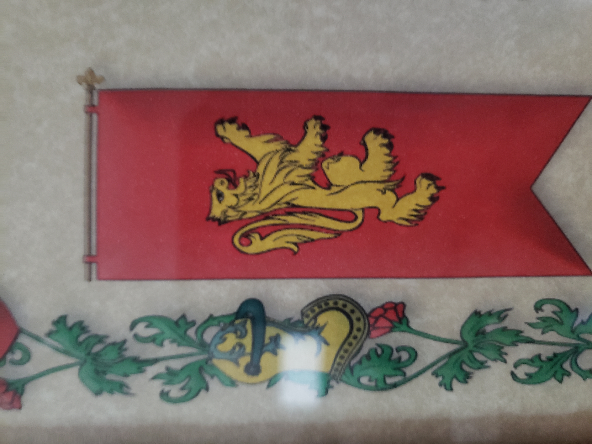

View on GitHub
Index
Page 1
Page 2
Page 3
Page 4
Page 5
Page 6
Page 7
Page 8
Page 9
Page 10
Page 11
Page 12
Page 13
Page 14
Page 15
Page 16
Page 17
Page 18
Page 19
Page 20
Page 21
March29-a
March29-b
Generate Common JS Error
Generate Page Specific JS Error
Generate HTTP Error
11 Best Places to Visit in Scotland
Go to next page
1. Edinburgh
2. Glasgow
3. Scottish Highlands

4. St. Andrews
7. Loch Lomond